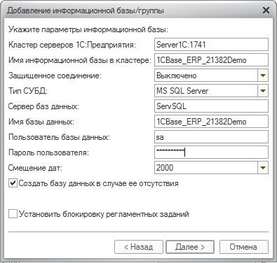

Установка по аналогии с 8.2
порт 17
!!! Незабыть сменить диск на D
"C:\Program Files (x86)\1cv8\8.3.6.2332\bin\ragent.exe" -srvc -agent -regport 1741 -port 1740 -range 1760:1791 -d "D:\Program Files (x86)\1cv8\srvinfo"
Демо конфигурацию ставить на свой комп. Затем через "Запуск 1С..." добавить новую серверную базу
Srvr="Server1C:1741";Ref="1CBase_ERP_21277";
Администратор (ОрловАВ)
1CBase_ERP_21382Clear
1CBase_ERP_21382Demo
